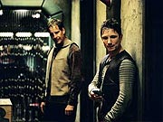
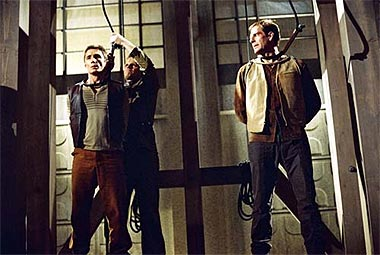
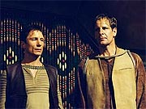

|
MANCHETE
DO EPISDIO
Aventura
planetria volta a debater
a necessidade da Primeira Diretriz
Episdio
anterior | Prximo
episdio
Sinopse:
Archer, Hoshi e Reed esto voltando de uma misso a uma civilizao pr-dobra. Para se camuflar, o trio usou maquiagem para se parecer com o povo local, que aparentemente estava s vsperas de uma guerra de grandes propores (embora ainda no houvesse conflito armado). Enquanto o grupo comea a tirar seus disfarces, Reed descobre que perdeu seu comunicador.
Aps vasculharem todos os lugares possveis, os tripulantes da Enterprise chegam concluso de que a pea s pode estar no planeta. Hoshi consegue detectar um sinal do aparelho, restringindo sua posio exata a uns poucos quarteires da cidade em que o grupo esteve pouco tempo atrs. Archer e Reed decidem voltar superfcie para resgatar o equipamento e evitar a contaminao daquela cultura com tecnologia avanada.
Os dois voltam a um bar onde estiveram antes, e Reed detecta o sinal do comunicador, em uma sala em que ele no havia estado antes. Quando os dois vo at l, descobrem que h gente no recinto e preferem esperar os aliengenas sarem antes de resgatar a pea. Mas a dupla surpreendida por soldados do exrcito local, que, desconfiados, acabam detendo-os.
 Capturados, eles so interrogados a respeito do comunicador. "O que esse aparelho?", pergunta o general Gosis, que acredita que os dois sejam espies da Aliana, a faco inimiga daquele povo. Quando Archer e Reed se recusam a cooperar ou a revelar alguma informao, so espancados. Com as agresses, os aliengenas acabam descobrindo que eles esto usando uma maquiagem, mas na verdade parecem ter sido cirurgicamente alterados.
Os dois so imediatamente levados a um mdico, que deve examin-los para determinar por que eles tm sangue vermelho e so to diferentes. Os exames revelam ainda mais surpresas: a disposio dos rgos internos completamente diferente. De posse dessas novas informaes, Gosis volta a interrogar Archer e Reed. Com os exames e uma foto feita por uma aeronave do shuttlepod, o militar sugere que a dupla seja aliengena.
Para evitar revelar a verdade, Archer decide assumir a identidade de um espio da Aliana. Ele diz que o shuttlepod na verdade um veculo suborbital que no pode ser detectado pelos sensores. Quanto s diferenas de fisiologia, completa Reed, elas so resultado do fato de os dois serem geneticamente projetados para serem melhores soldados. Archer diz que s h dois deles no momento, assim como todos os equipamentos que eles portavam (os comunicadores, scanners e pistolas de fase).
Os prisioneiros so novamente levados ao crcere, e Gosis pergunta ao mdico, Temec, se h algum meio de descobrir se os dois esto dizendo a verdade. O doutor diz que nada pode fazer para checar as proposies, a no ser que ele tenha a chance de conduzir uma autpsia e estudar os rgos internos. Gosis decide ordenar a execuo dos prisioneiros.
Na Enterprise, Hoshi determina a posio aproximada de Archer e Reed e no tarda para a tripulao concluir que os dois foram capturados. Monitorando as comunicaes locais, ela descobre que os prisioneiros esto para ser executados, na forca. T'Pol decide que hora para um plano de resgate.
Trip sugere que eles usem a nave-clula Suliban capturada no ano passado, quando eles levaram Klaang ao mundo natal Klingon, para resgatar Archer e Reed. O engenheiro comea a trabalhar com Mayweather num meio de ativar o sistema de camuflagem da nave, o que acaba provocando um pequeno acidente: uma descarga faz com que o brao de Trip fique temporariamente camuflado. Ele vai at Phlox, que sugere que o problema deve se resolver sozinho. Enquanto isso, Trip vai precisar trabalhar usando uma luva para poder ver a prpria mo.
T'Pol informa o engenheiro de que o tempo urge, o que obriga o trio a partir imediatamente para o resgate de Archer e Reed. O sistema de camuflagem da nave-clula ainda no est totalmente funcional, o que faz com que ela seja atacada por alguns avies do exrcito local. Eventualmente, os tripulantes da Enterprise conseguem escapar e descer no local em que Archer e Reed esto para ser enforcados.

Aps um tiroteio, Archer consegue rapidamente recuperar as peas apreendidas pelos aliengenas e partir com os outros, voltando so e salvo para a Enterprise. Enquanto os aliengenas esto assustados, temendo que a Aliana tenha tecnologia que vai alm de seus mais desvairados sonhos, Archer precisa confrontar o fato de que no preciso deixar tecnologia para interferir na evoluo de uma cultura pr-dobra.
Comentrios:
"The Communicator" para a segunda temporada o que
"Civilization" foi para a primeira: essencialmente uma aventura, ambientada em um planeta aliengena que ainda est longe de conhecer a tecnologia de dobra espacial. Na primeira temporada, a civilizao era pr-industrial; agora, a civilizao mais avanada, equivalente ao mundo ocidental da primeira metade do sculo 20 na Terra.
Diferentemente do episdio do primeiro ano, entretanto, este aqui se prope a estabelecer tambm uma discusso filosfica a respeito das motivaes que levaram criao da Primeira Diretriz. A no-interferncia com outras culturas menos avanadas parece ser uma idia cada vez mais justificvel, aps cada nova aventura da Enterprise.
O nico problema que aqui ela j tomada a priori, como se o conceito j estivesse plenamente estabelecido. Archer est at disposto a morrer por isso, coisa que provavelmente nem Picard, e certamente nem Kirk, estariam dispostos a fazer. Se isso mostra uma maturidade extra do capito da Enterprise (NX-01), ela parece ter vindo na hora errada e de forma no-natural.
difcil acreditar que Archer estivesse disposto a ir to longe por um princpio que nem uma lei de seu governo, nem se mostrou ser absolutamente essencial em muitas situaes. Mesmo assim, ainda h salvao para o conceito, na forma com que o capito agiu nessa circunstncia.
Ao que parece, Archer est filosoficamente maduro para abraar a Primeira Diretriz. Por outro lado, ele est ainda muito longe do ideal no que diz respeito a aplic-la. O capito fez muito mais por interferir naquela cultura se dizendo um espio da Aliana do que se revelando um aliengena. Sob esse ngulo especfico, o fato de ele ser um capito relativamente inexperiente, trabalhando com problemticas absolutamente novas, foi bem trabalhado pelo roteiro.
Mais que isso, vemos ao final de um episdio, pela primeira vez, a sensao de que as aes de Archer acabaram mesmo tendo um impacto negativo. No sabemos se de fato a interferncia causada pela visita dele e de Reed ao planeta foi devastadora, mas fica muito claro, no ltimo dilogo do capito com T'Pol, que pelo menos o potencial para que isso acontecesse havia permanecido. Numa srie que parece sempre concluir os episdios com finais perfeitos, foi um tremendo dum avano.
Independentemente de sua slida (ou no) base filosfica, o que realmente atrai no segmento a aventura. Talvez por isso esse episdio lembre tanto de
"Civilization" -- a melhor parte de tudo ver a diplomacia caubi em ao. No caso especfico, no resgate feito por Trip, T'Pol e Mayweather aos dois prisioneiros.
A sequncia toda parece ser muito bem concebida e dirigida, desde o combate areo entre a nave-clula e pequenos e primitivos avies militares aliengenas at o tiroteio final, em que nossos heris usam suas pistolas de fase contra armas de disparo de projteis bem convencionais.
 exceo de Phlox, todos os personagens regulares parecem ser usados numa dose razovel, embora no haja nada realmente de muito importante para qualquer um deles fazer. Nem para Archer e Reed, os pontos focais da histria, o material apresentado substancialmente marcante. Claramente, trata-se de um episdio orientado a enredo -- a ao e a histria so mais importantes que o mundo interno dos personagens. Concebido nesses termos, o episdio funciona.
A idia original parece ter sado diretamente da Srie Clssica. Em
"A Piece of the Action", McCoy descobre ao final do episdio que esqueceu seu comunicador em Sigma Iotia II, o que leva Kirk a deduzir que em breve aquela cultura atingiria o status tecnolgico da Federao. No caso do episdio original, no passava de uma piada para fechar a histria. Aqui, serviu como base para um episdio inteiro (embora o roteirista Andr Bormanis jure que a origem da histria seja outra).
No que isso desvalorize o segmento; na verdade, havia de fato uma boa histria para ser contada em torno de um evento como esse. E o roteiro foi feliz em no tratar as consequncias dos atos da tripulao da Enterprise de forma to mundana. H sim um forte impacto na interferncia de Archer e cia. naquele mundo. E isso fica muito claro.
Os pontos negativos vo para a verossimilhana. Os aliengenas realmente no precisavam matar os dois prisioneiros para obter mais informaes. Um deles bastaria para a autpsia, e o outro poderia ser interrogado e continuar fornecendo informaes e respostas, at as relativas s futuras descobertas propiciadas pelo post mortem.
Por falar em furo de roteiro, algum mais a reparou que Archer e Reed no tiveram nenhuma dificuldade em entender tudo que os aliengenas diziam, mesmo depois de terem seus comunicadores (onde supostamente estariam instalados seus tradutores universais) confiscados?
E o cmulo da maluquice foi o (totalmente desnecessrio) episdio de Trip ficando com a mo invisvel por conta de uma descarga da nave Suliban. Ento quer dizer que alguma espcie de "p de pirlimpimpim" a responsvel pela camuflagem nas naves Sulibans? Algo que possa "aderir" a qualquer material? E no um campo de deflexo da luz, como sempre foi sugerido em todos os manuais tcnicos de
Jornada nas Estrelas?
J seria ridculo o suficiente se tivesse sido escrito por qualquer um, mas se torna pior ainda se nos lembramos que o roteirista do episdio tambm o consultor cientfico da srie! At tu, Brutus?
Pelo menos somos presenteados com belssimas tomadas de efeitos especiais (alm da j referida batalha area, temos diversas vises panormicas do mundo aliengena feitas totalmente por computador) e cenrios bem trabalhados, que adicionam aos valores de produo do episdio. A maquiagem dos aliengenas razovel, considerando que so "aliengenas da semana".
E o episdio tambm derruba o mito de que os tripulantes so sempre cirurgicamente alterados para parecerem aliengenas (o que ocorreu de fato, pelo menos uma vez, em
"The Enterprise Incident", da Srie Clssica, quando Kirk foi alterado para parecer Romulano). Nesse caso, eles apenas foram maquiados mesmo (talvez, aps o episdio, a Frota Estelar tenha determinado que eles precisariam mesmo passar por cirurgia para participar de tais misses, nos levando ao episdio de Kirk no sculo 23...).
No final das contas, uma aventura que no brilhante, mas chega a ser satisfatria. E um episdio cujo dilema baseado numa lei que ainda no existe, mas que todo mundo j sabe que vai existir. Ah, sim, e eu j ia me esquecendo: Archer volta a apanhar. J estava com saudades...
Citaes:
Mayweather - "This would be a lot easier if there were a button marked Cloak."
("Isso seria bem mais fcil se tivesse um boto marcando 'Camuflagem'.")
Mayweather - "Having a cloaked hand could have it's advantages; it'd be useful in a poker match...it might be helpful on movie night -- if you bring a date... in case you want to steal some popcorn..."
("Ter uma mo camuflada pode ter suas vantagens; seria til numa partida de pquer... seria bom numa noite de filme -- se voc levar uma paquera... caso queira roubar umas pipocas...")
Archer - "I've gotten plenty of lectures on cultural contamination, but T'Pol never mentioned anything about sacrificing crewmen to prevent it."
("Eu tive um monte de sermes sobre contaminao cultural, mas T'Pol nunca falou nada de sacrificar tripulantes para evit-la.")
T'Pol - "You don't have to leave technology behind to contaminate a culture."
("Voc no precisa deixar tecnologia para trs para contaminar uma cultura.")
Trivia:
 Quando a sinopse do episdio foi revelada, alguns fs imaginar que a premissa tivesse sado direto de um episdio da
Srie Clssica. Mas o roteirista Andr Bormanis diz que no foi bem assim: "A premissa de
'The Communicator' na verdade veio a mim quando eu perdi meu telefone celular uns poucos meses atrs. Eu no estava pensando em
'A Piece of the Action', mas claro que h um paralelo a."
Quando a sinopse do episdio foi revelada, alguns fs imaginar que a premissa tivesse sado direto de um episdio da
Srie Clssica. Mas o roteirista Andr Bormanis diz que no foi bem assim: "A premissa de
'The Communicator' na verdade veio a mim quando eu perdi meu telefone celular uns poucos meses atrs. Eu no estava pensando em
'A Piece of the Action', mas claro que h um paralelo a."
As filmagens comearam no dia 12 de setembro de 2002 e foram at o dia 20. Todas as tomadas foram feitas em estdio, e os regulares Scott Bakula, Dominic Keating e Linda Park tiveram de usar maquiagem aliengena por boa parte das filmagens.
Francis Guinan j havia aparecido em dois episdios de
Voyager: "Ex Post
Facto", como o ministro Kray, e em "Live Fast and
Prosper", como Zar.
Tim Kelleher j havia aparecido como o tenente Gaines no episdio final de
A Nova Gerao, "All Good Things...". Ele tambm interpretou Four of Nine (P'chan) no episdio
"Survival Instinct", de Voyager.
Dennis Cockrum tambm apareceu em "Live Fast and
Prosper", como Orek, e como um capito aliengena em "Face of the Enemy"
(A Nova Gerao).
Ficha
tcnica:
Histria de
Rick
Berman & Brannon Braga
Roteiro de Andr Bormanis
Direo de James Contner
Exibido em 13/11/2002
Produo:
034
Elenco:
Scott
Bakula como Jonathan Archer
Jolene Blalock como
T'Pol
John Billingsley
como Phlox
Anthony Montgomery
como Travis Mayweather
Connor Trinneer como
Charlie 'Trip' Tucker III
Dominic Keating como
Malcolm Reed
Linda Park como Hoshi Sato
Elenco convidado:
Francis Guinan como Gosis
Tim Kelleher como tenente Pell
Dennis Cockrum como aliengena do bar
Brian Reddy como dr. Temec
Jason Waters como soldado
Episdio
anterior | Prximo
episdio
|